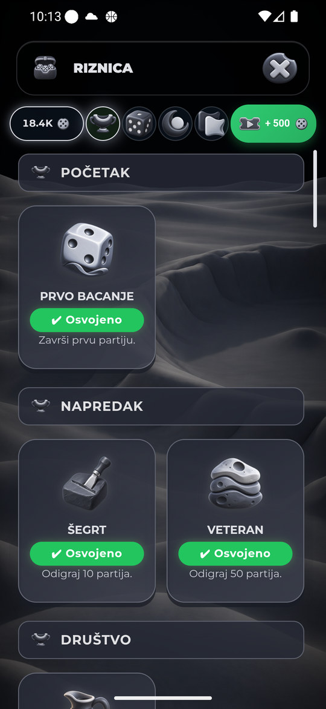
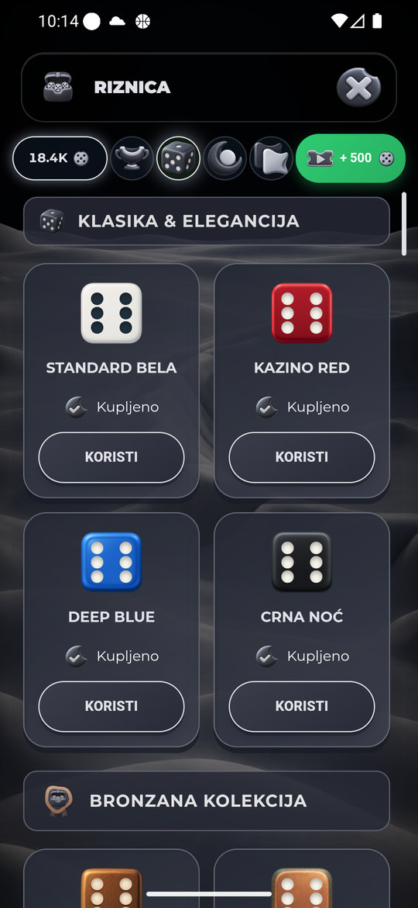

Riznica — osnovni pregled deset tema
Stvarni Android emulator, logički 360×780, svih deset tema: Trofeji (prve kategorije), Skinovi (prva četiri klasična skina), Efekti (proslave, atmosfera, kosmos), Teme (različiti delovi kataloga).
Galerija prikazuje postojeću objavljenu verziju. Nove lokalne CSS/JS dorade nisu commitovane niti deployovane.
116 semantičkih katalog-uloga po temi: 55 tematskih + 61 zajednička (48 skinova, 10 odobrenih pregleda tema i 3 namerno univerzalna efekta: ice_age, balkan, dragon_fire). Raniji izveštaj 58+58 proveravao je i tri tematska originala koja više nisu aktivne sličice. Sada se koriste stvarne putanje getTreasuryEffectPreviewSource i quality resolver. Broj uloga nije broj istovremeno vidljivih ili preuzetih slika; skinovi uz temu zavise od vlasništva.
Lokalne dorade koje Android snimci još ne potvrđuju
Zaglavlja devet tema koriste sopstveni card-fill/ink. Statusi i nagradno dugme koriste čitljivu tematsku površinu bez jarke univerzalne zelene; Green statusi koriste postojeću Clay inset površinu. Težina naslova 850 i razmak .025em prate Green, težina akcija/statusa 700; uklonjen nasleđeni razmak naslova kartica i zamućujuće tekstualne senke. Dimenzije/funkcije i PNG identiteti ostaju.
PASS: 120 izolovanih Chromium slučajeva — 10 tema × 4 taba × 320×568, 360×780, 412×915. Stvarni ShopManager i CSS, sintetičko vlasništvo; izračunate Green mere/tipografija, bez horizontalnog izlaska; boje zaglavlja/statusa iz palete.
Montserrat je deklarisan; izolovani offline test može koristiti Arial fallback. Android snimci su odvojen dokaz.
Granice provere
- Nije sada vizuelno pregledana svaka od 26 trofejnih, 48 skin ili 16 efektnih kartica u svakoj temi; njihov inventar i putanje provereni su statički.
- Nema nove provere stvarne kupovine, potvrda/grešaka, reklamnih nagrada ili otključavanja skinova nalogom.
- Nisu aktivirane žive animacije efekata niti novi skinovi. Dodir trofejne kartice u Green nije otvorio zaseban detalj; takav modal nije označen kao pregledan.
- Screenshot ne potvrđuje tačno trajanje intra, fps, prvi mrežni transfer, svaki jezik ili fizički Samsung S25.
- Sve lokalne dorade zahtevaju korisnikov deploy i novi Android pregled. Ostala retka stanja i preostalih šest soba ostaju za nastavak.
Zelena
Osnovni prolaz četiri taba pregledan; lokalne dorade čekaju Android potvrdu posle deploya.
Svetlo zlato
Osnovni prolaz četiri taba pregledan; lokalne dorade čekaju Android potvrdu posle deploya.
Trula višnja
Osnovni prolaz četiri taba pregledan; lokalne dorade čekaju Android potvrdu posle deploya.
Plavi okean
Osnovni prolaz četiri taba pregledan; lokalne dorade čekaju Android potvrdu posle deploya.
Neon Cyber
Osnovni prolaz četiri taba pregledan; lokalne dorade čekaju Android potvrdu posle deploya.
Kraljevski ametist
Osnovni prolaz četiri taba pregledan; lokalne dorade čekaju Android potvrdu posle deploya.
Vaskršnja
Osnovni prolaz četiri taba pregledan; lokalne dorade čekaju Android potvrdu posle deploya.
Pustinjsko staklo
Osnovni prolaz četiri taba pregledan; lokalne dorade čekaju Android potvrdu posle deploya.
Mesečev sjaj
Osnovni prolaz četiri taba pregledan; lokalne dorade čekaju Android potvrdu posle deploya.
Mesečev sjaj — Trofeji / početak

Mesečev sjaj — Skinovi / klasika

Mesečev sjaj — Efekti / proslave
Mesečev sjaj — Efekti / atmosfera
Mesečev sjaj — Efekti / kosmos
Mesečev sjaj — Teme / katalog
Severna maglina
Osnovni prolaz četiri taba pregledan; lokalne dorade čekaju Android potvrdu posle deploya.
Severna maglina — Trofeji / početak
Severna maglina — Skinovi / klasika
Severna maglina — Efekti / proslave
Severna maglina — Efekti / atmosfera
Severna maglina — Efekti / kosmos
Severna maglina — Teme / katalog
Učitavanje i vraćanje emulatora
Svih devet direktnih izbora već posedovanih tema iz Riznice uspelo je iz prvog pokušaja u ovom prolazu; vraćanje Zelene takođe. Tokom prvih sekundi vidljive su stare ili delimično učitane ikone. Ovo nije dokaz trenutnog hladnog prelaska niti potvrda lokalnog decode popravka.
Promena teme — nepotpuni prvi PNG prikaz
Severna — nova paleta uz prethodne tab ikone tokom učitavanja
Vaskršnja — prazni pregledi tokom prvog učitavanja
Završno vraćanje Zelene u Riznici
Zelena / originalna rezolucija emulatora
Nema pokrenute partije, kupovine, nagradne reklame, preuzimanja nagrade, prihvaćenog duela ili poslate poruke. Birane su samo već posedovane teme. Novi poziv Lidije je nestao sam dok je traženo odobrenje; nije kliknuto odbijanje/prihvatanje.
Vraćena Zelena kroz vidljivi UI; wm size/density resetovani na originalnih 1440×3120 /560dpi. Emulator otvoren i prijavljen.